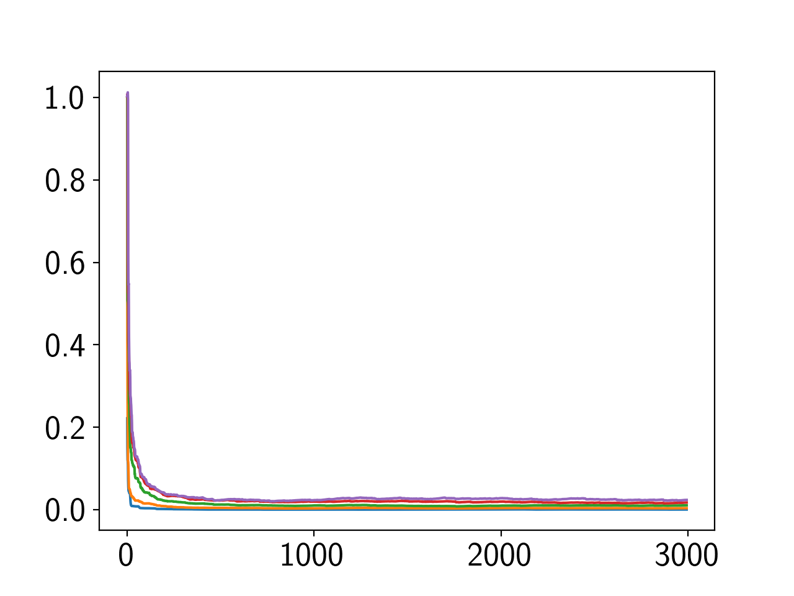
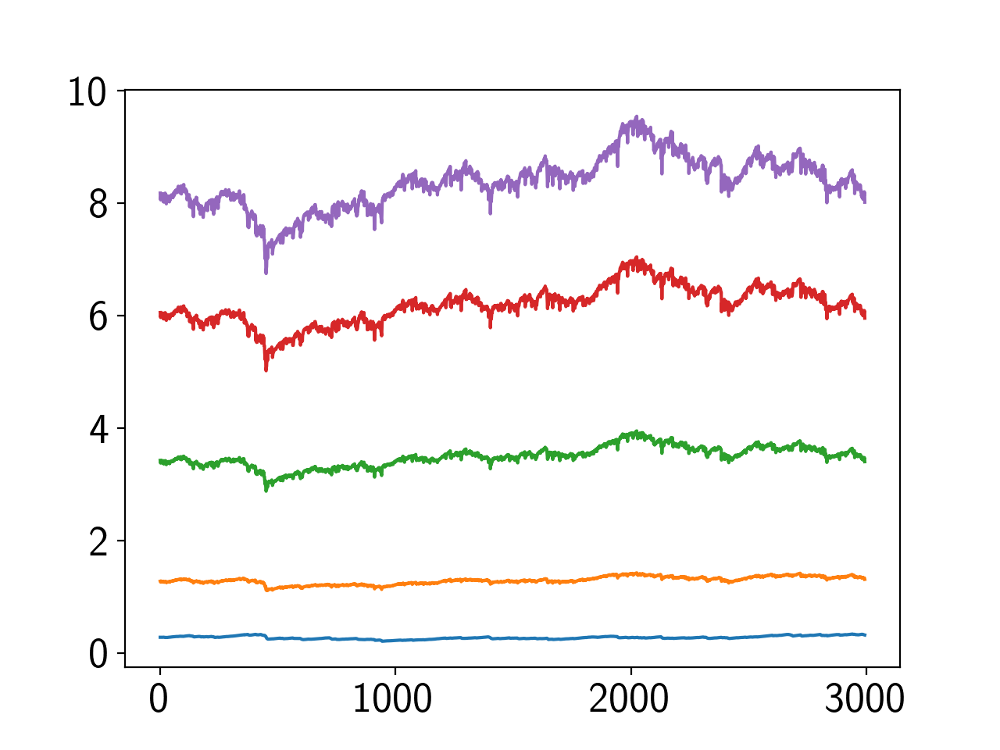

\begin{equation*}
\newcommand\ve[1]{\boldsymbol{#1}}
\newcommand\mean[2]{\mathrm{E}_{#1} \left[ #2 \right]}
\end{equation*}
- Covariance Kernels for Fast Automatic Pattern Discovery and Extrapolation with Gaussian Processes これの61p.あたり。
- Toeblitz Toolkit for Fast Toeplitz Matrix Operations 1.03 Toeplitz行列をFFTで解くやつのライブラリ
ミソは、 \(R^{-1}\) そのものではなく、 \(R^{-1}x\) をFFTを使って求めるということにあると思ふ。
で、再開して手元でメモをとっているが、AR(p)が俄然悪い。
背景雑音が悪さしてないか。背景雑音を-200dB（ほぼ0）に。
- 傾向変わらず。ゆらぎが小さくなった程度
そういえば、なぜ AR(p) のオフセットが乗っているのか。
SAのステップサイズを高めた状態に対応するものかと思っていたが、違うようだ。SAと同じ定常誤差になるようにステップサイズを設定しても収束が遅い。
条件数悪化が原因ではないかと考えているので、S-MとAR(1)で求まった \(R^{-1}\) の固有値をJupyterで観察してみた。すると、
- 条件数はS-MとAR(1)でほぼ同じ（30付近をフラフラ。N=5, 相関0.8）
- S-Mの固有値が指数的な減少をしている 。一方のAR(1)の方はほぼ一定の固有値。
- そういえば、S-Mの \(R^{-1}\) と真の \(R^{-1}\) を比較するときはノルムを1に揃えていた。要素の大きさは加味していなかった。
- 条件数が変わらないで固有値が減っているということは、S-Mは行列要素が小さくなっており、そしてそれが本質的に収束を早めることに寄与している。 AdaGradの如く、最初は勾配を大きくとり、徐々に勾配を小さくすることが有効になっているっぽい。
- AR(1)の \(R^{-1}\) を1ノルム化したら定常誤差がNGSAと同等になった（ただし、収束は悪化）
- NGSAの \(R^{-1}\) を1ノルム化にしたら性能悪化した（定常誤差大）
- AR(1)の \(R^{-1}\) は真値ともよく一致しているので、足りないのはこの点だと思う。 学習が進むにつれて行列要素を小さくする必要がある。
観察から、 誤差に応じて行列要素の大きさを変えるべき であることが分かった。つまり、誤差の符号だけではなく、誤差の絶対値を使うべきである。そしてそれはNewton/LMSと同一。
Newton/LMSの \(R^{-1}\) を \(\mathcal{O}(pN)\) で計算できるのは旨味がある。既存研究があるはず。調査してみる。
- Fast LMS/Newton Algorithms Based on Autoregressive Modeling and Their Application to Acoustic Echo Cancellation 発想としてはもうほぼ同一なんだけど、なぜか、本当に何故か \(R^{-1}\) をn-重対角行列としてない。これ、明日腰を据えて読んでみよう。
- Fast LMS/Newton Algorithms for Stereophonic Acoustic Echo Cancelation ちゃんと読んでない。ほぼ同じはず。行列や固有値の観察もあるのに、これも同様に何故かn重対角行列にしてない。
- Efficient least squares adaptive algorithms for FIR transversal filtering 古いけど、上記含め俯瞰的に触れている。
- On Fast Converging Data-Selective Adaptive Filtering NNGSAと全く同じ手法が提案されておる。
- Adaptive Filtering - Theory and Applications 適応フィルタの包括的まとめ。京大林先生並みにまとめてある。
祈るような感じで探している…。今の所なさそうに見えるが…。
もう一回調べて、無ければ、追加実験の後にoverleaf執筆に入ろうかな。 一旦寝て、再度調査してみてからにしよう。落ち着いてからのほうがよい。実データで悪いかもしれないし。